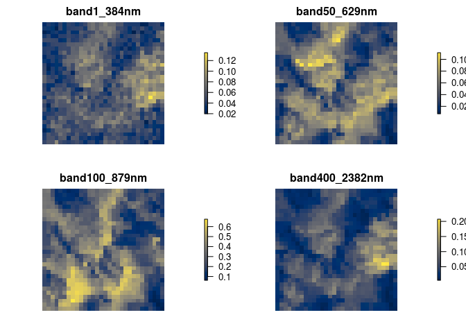
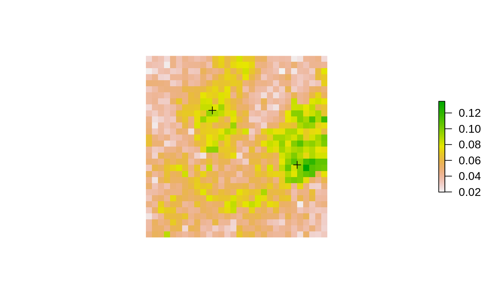
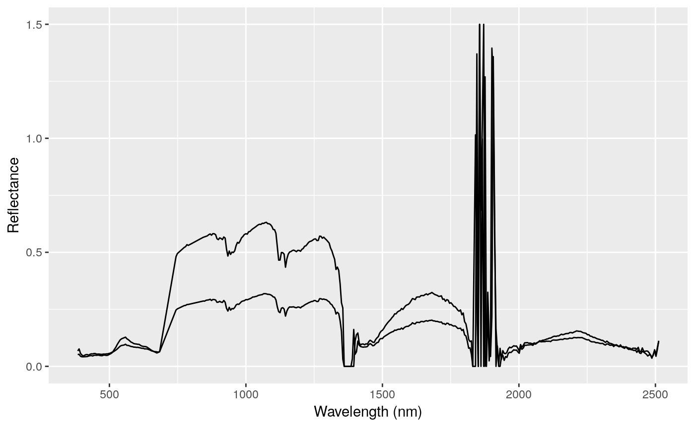

The goal of neonaop is to make data from the NEON AOP easier to use. The National Ecological Observatory Network (NEON) collects hyperspectral imagery via its Aerial Observation Platform (AOP) at a 1 meter spatial resolution for 426 different wavelengths.
Examples
Create raster objects from hyperspectral images
This is a basic example which shows you how to read some bands from L3 hyperspectral reflectance data as a multi-layer raster:
library(neonaop)
library(raster)
library(viridis)
library(sp)
library(tidyverse)
path_to_file <- system.file('extdata', 'ex.h5', package = 'neonaop')
r <- hs_read(path_to_file, bands = c(1, 50, 100, 400))
r
#> class : RasterBrick
#> dimensions : 30, 30, 900, 4 (nrow, ncol, ncell, nlayers)
#> resolution : 1, 1 (x, y)
#> extent : 257000, 257030, 4111970, 4112000 (xmin, xmax, ymin, ymax)
#> coord. ref. : +init=epsg:32611 +proj=utm +zone=11 +datum=WGS84 +units=m +no_defs +ellps=WGS84 +towgs84=0,0,0
#> data source : in memory
#> names : band1_384nm, band50_629nm, band100_879nm, band400_2382nm
#> min values : 0.0198, 0.0073, 0.0620, 0.0051
#> max values : 0.1348, 0.1113, 0.6743, 0.2072
Extract spectra at spatial point locations
If you need to extract spectra at spatial points, there is a hs_extract_pts function that extracts values from bands efficiently, without needing to first create a raster object.
For example, we may want to extract spectra for every band at the following two points, defined in a SpatialPointsDataFrame. Note also that we can use the hs_proj4string function to get the proj4string representation of the coordinate reference system used in the hyperspectral image.
pts <- SpatialPointsDataFrame(coords = data.frame(x = c(257025, 257011),
y = c(4111982, 4111991)),
data = data.frame(id = 1:2),
proj4string = CRS(hs_proj4string(path_to_file)))
plot(r[[1]], axes = FALSE, box = FALSE)
plot(pts, add = TRUE)
To do this efficiently, you can use hs_extract_pts:
vals <- hs_extract_pts(path_to_file, pts = pts, bands = 1:426)
vals
#> class : SpatialPointsDataFrame
#> features : 2
#> extent : 257011, 257025, 4111982, 4111991 (xmin, xmax, ymin, ymax)
#> coord. ref. : +init=epsg:32611 +proj=utm +zone=11 +datum=WGS84 +units=m +no_defs +ellps=WGS84 +towgs84=0,0,0
#> variables : 429
#> names : id, band1_384nm, band2_389nm, band3_394nm, band4_399nm, band5_404nm, band6_409nm, band7_414nm, band8_419nm, band9_424nm, band10_429nm, band11_434nm, band12_439nm, band13_444nm, band14_449nm, ...
#> min values : 1, 0.0518, 0.0528, 0.0444, 0.0419, 0.0418, 0.0421, 0.0424, 0.0429, 0.0452, 0.0467, 0.0471, 0.0455, 0.0485, 0.0487, ...
#> max values : 2, 0.0675, 0.0763, 0.0571, 0.0501, 0.0451, 0.0485, 0.0512, 0.0515, 0.049, 0.0528, 0.0549, 0.0543, 0.0564, 0.0557, ...Now we have columns with band indices and wavelengths, which we can use to plot spectra, e.g.,
vals %>%
as_tibble() %>%
select(id, starts_with('band')) %>%
gather(band, reflectance, -id) %>%
separate(band, c('index', 'wavelength')) %>%
mutate(wavelength = parse_number(wavelength)) %>%
ggplot(aes(wavelength, reflectance, group = id)) +
geom_line() +
xlab('Wavelength (nm)') +
ylab('Reflectance')